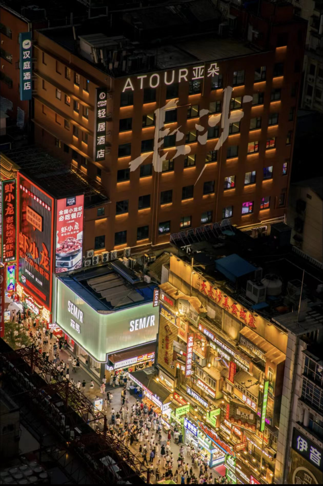
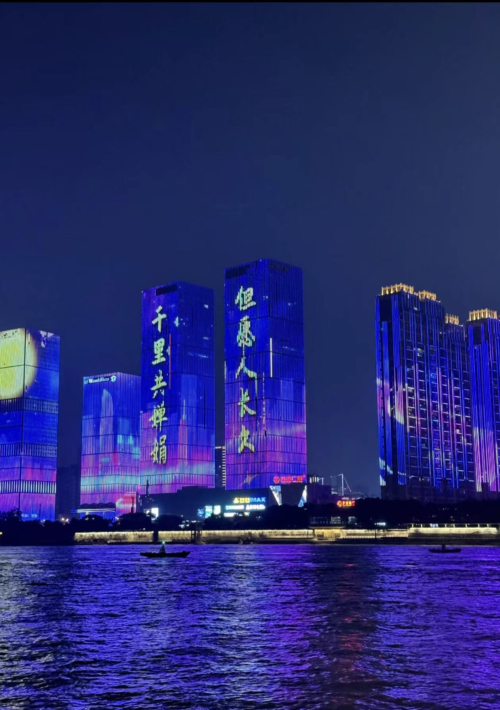

简介

LOGO含义
黑色圆框如一方温润的「语言角落」，圈住乡音的边界；橙红色曲线是舒展的人形，也是流动的语调 — 一笔蜿蜒如长沙话的抑扬顿挫，像巷弄里的闲谈、饭桌上的吆喝，带着烟火气的鲜活与亲切。
圆框未闭合的缺口，象征着方言不被封闭、始终向时代敞开；「言隅」之名与图形呼应，既是「语言的故乡」，也是为每一种乡音留存的数字自留地，让长沙方言的韵律、乡愁的温度，在数字世界里有处可栖。
IP言隅含义
“言隅”意为“语言的故乡”或“珍藏乡音的角落”。它描绘了这样一个意象：在飞速发展的时代洪流中，我们为每一种独特的方言、每一份质朴的乡愁，保留一个安心的、极具共情力的数字家园（目前聚焦于长沙‘湘’方言）。

关于
其他事项
本项目为湖南师范大学「金种子杯」「挑战杯」大学生创业大赛参赛项目，由湖南师范大学外国语学院、商学院、计算机学院、新闻与传播学院跨学科团队联合打造，特邀方言研究领域专家曾达之副教授担任指导老师。
项目以长沙湘方言为起点，未来将逐步拓展至全国多方言区域，打造全国性的方言文创IP矩阵，成为中国声音文创标杆品牌。
商务合作、IP授权、公益联动可通过官方渠道联系我们。
让方言「说话」，让城市「有声」
©2026 言隅 版权所有 | 基于AI声音复刻的沉浸式方言文创IP